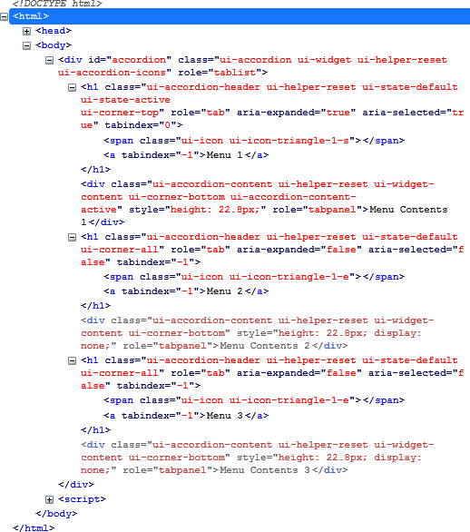
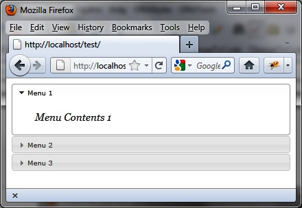

{% include JB/setup %}
{% raw %}
<div>
<div class="book" title="Formatting Content"><div class="book"><div class="book"><div class="book"><h1 class="title2"><a id="formatting_content-id1" class="calibre1"></a>Formatting Content</h1></div></div></div><p class="calibre7">Using the <code class="literal">accordion ()</code> method
    drastically changes the appearance of HTML elements in the rendered page.
    Indeed, this method scans the HTML and adds new CSS classes to the
    elements (here, the accordion menus) to give them the appropriate
    style.</p><p class="calibre7">Here, for example, the HTML code that appears after the <code class="literal">accordion ()</code> instruction has been changed (<a class="ulink" href="ch03s02.html#html_code_generated_by_the_accordion_ope" title="Figure 3-3. HTML code generated by the accordion () method">Figure 3-3</a>). This code was
    retrieved using the Firebug extension in <span class="firstname">Firefox.</span></p><p class="calibre7">It is also possible to use the CSS classes of elements to customize
    the display. For example, if we alter the <code class="literal">ui-accordion-header</code> CSS class associated with
    <code class="literal">&lt;h1&gt;</code> elements, we should get a
    new appearance for the menu titles. Similarly, if we change the <code class="literal">ui-accordion-content</code> CSS class associated with
    <code class="literal">&lt;div&gt;</code> elements, we get a new
    aspect for the content of menus.</p><div class="book"><div class="figure"><a id="html_code_generated_by_the_accordion_ope" class="firstname"></a><div class="book"><div class="book"><a id="I_mediaobject3_d1e1862" class="firstname"></a></div></div><p class="title4">Figure 3-3. HTML code generated by the accordion () method</p></div></div><p class="calibre7">Modify these elements in the HTML by adding a <code class="literal">&lt;style&gt;</code> tag (shown in bold):</p><a id="I_programlisting3_d1e1872" class="firstname"></a><pre class="programlisting">&lt;!DOCTYPE html&gt;
&lt;script src = jquery.js&gt;&lt;/script&gt;
&lt;script src = jqueryui/js/jquery-ui-1.8.16.custom.min.js&gt;&lt;/script&gt;

&lt;link rel=stylesheet type=text/css
      href=jqueryui/css/smoothness/jquery-ui-1.8.16.custom.css /&gt;

<span class="firstname"><strong class="userinput">&lt;style type=text/css&gt;</strong></span>
  <span class="firstname"><strong class="userinput">h1.ui-accordion-header {</strong></span>
    <span class="firstname"><strong class="userinput">font-size : 10px;</strong></span>
  <span class="firstname"><strong class="userinput">}</strong></span>
  <span class="firstname"><strong class="userinput">div.ui-accordion-content {</strong></span>
    <span class="firstname"><strong class="userinput">font-size : 15px;</strong></span>
    <span class="firstname"><strong class="userinput">font-family : georgia;</strong></span>
    <span class="firstname"><strong class="userinput">font-style : italic;</strong></span>
  <span class="firstname"><strong class="userinput">}</strong></span>
<span class="firstname"><strong class="userinput">&lt;/style&gt;</strong></span>

&lt;div id="accordion"&gt;
  &lt;h1&gt;&lt;a&gt;Menu 1&lt;/a&gt;&lt;/h1&gt;
  &lt;div&gt;Menu Contents 1&lt;/div&gt;
  &lt;h1&gt;&lt;a&gt;Menu 2&lt;/a&gt;&lt;/h1&gt;
  &lt;div&gt;Menu Contents 2&lt;/div&gt;
  &lt;h1&gt;&lt;a&gt;Menu 3&lt;/a&gt;&lt;/h1&gt;
  &lt;div&gt;Menu Contents 3&lt;/div&gt;
&lt;/div&gt;

&lt;script&gt;

$("#accordion").accordion();

&lt;/script&gt;</pre><p class="calibre7">This HTML code is identical to the previous, except that we added
    the <code class="literal">&lt;style&gt;</code> tag after the
    inclusion of jQuery UI styles. The addition of our own styles must be done
    <span class="firstname"><em class="calibre4">after</em></span> those of jQuery UI—if not, our changes will be
    ignored.</p><p class="calibre7">The menus and their contents now appear customized to the new style
    (<a class="ulink" href="ch03s02.html#customized_accordion_menus" title="Figure 3-4. Customized accordion menus">Figure 3-4</a>).</p><div class="book"><div class="figure"><a id="customized_accordion_menus" class="firstname"></a><div class="book"><div class="book"><a id="I_mediaobject3_d1e1920" class="firstname"></a></div></div><p class="title4">Figure 3-4. Customized accordion menus</p></div></div></div></div>

{% endraw %}

